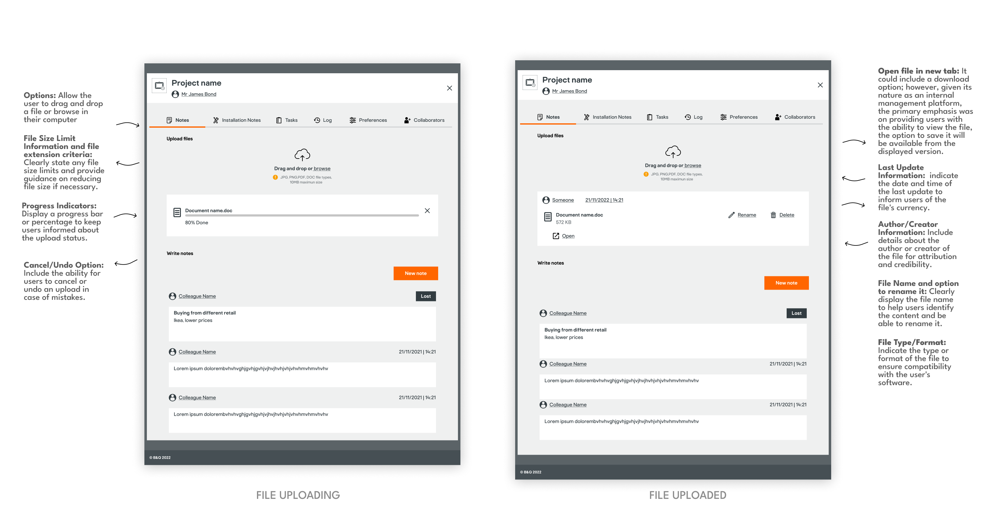

Internal Management Platform
Team & Role
Joining Kingfisher in the fall of 2021, I engaged in various teams and projects. In my initial year, I contributed to two teams, one primarily focused on end-to-end discovery projects related to the ecommerce site. This included investigations into the appointment booking system for home design projects and the development of new configurators for items such as curtains, blinds, and cut-to-size products. Concurrently, I worked on an internal Saas platform, which I'll delve into in this case study.
During the second year, my endeavors expanded to encompass UX design consultancy, extensive research collaborations aimed at selecting the right provider for a learning platform, and customer-facing elements like a PDP module for pagination.
Now, let's delve into the focal point of this case study – the Saas product, an internal management platform. As the sole designer, I dedicated my efforts to create solutions for this platform, which monitored B&Q customers' kitchen, bathroom, and storage projects. Operating in a dynamic agile environment with 4-week sprints, I closely collaborated with the Product Owner, QA, B&Q colleagues, and developers.
Problem Statement
The existing interface presented challenges in user navigation, project monitoring, and collaborative functionalities. The objective was to elevate the user experience by streamlining workflows, enhancing data visibility, and optimising the overall interface. This aimed to boost efficiency in project management and increase colleague satisfaction within the B&Q platform. This, in turn, would lead to improved customer satisfaction, as colleagues would be able to monitor customer-created projects on .com more effectively and follow up with them in a more comprehensive manner.
Click in the two arrows at the right top of the screen or in the bottom where it says "T3D - Presentation" to expand it and open it in Figma
User Flow for project activity
The place where the colleagues ( members of B&Q staff),and the project managers from those colleagues can manage all the activities happening within one project

Example - New feature to upload documents to notes
Design Process
Scope
In my role as a Product Designer, I played a crucial part in implementing impactful incremental changes to address colleagues' pain points. Regular meetings with the Product owner allowed discussions on colleagues' concerns, scope, and prioritisation typically dictated by business needs, as well as budget. The product manager facilitated this process by generating new Jira tickets with problem statements for my attention. My responsibility extended beyond the provided problem statement, involving an expansive search to streamline workflows and promote a user-centered design approach. The project's scope went beyond superficial aesthetic enhancements, influencing usability, efficiency, and overall user satisfaction, thereby enhancing the working environment and contributing to the success of the internal ecosystem.
Tools
Figma | Miro | Pen & Paper | Google for competitors research and best practices
What I did
I thoroughly investigated the problem statement, capturing colleagues' pain points and generating various proposals. These were discussed in weekly review meetings with the Product Owner and developers to ascertain scope and feasibility. This iterative process continued until reaching the approved solution, which I meticulously prepared in Figma. Recognising the need for a tailored design system for the internal platform, distinct from the existing e-commerce system, I crafted a comprehensive design system in Figma. This involved creating approximately 20 bespoke components, a few of which are showcased below, ensuring that future modifications or enhancements to the product could be seamlessly executed by anyone inheriting the project.